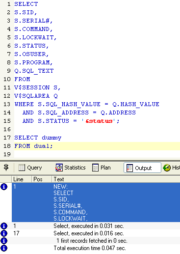
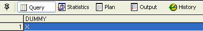

Execute sequentially all scripts in the current document. Note that the
output tab contains the execution results (errors, warnings, etc.) for every
script, but only the result of the latest query will appear in the result
grid.
For example, the two following scripts are sequentially executed :

and the result grid will look like this :

See Script Menu.